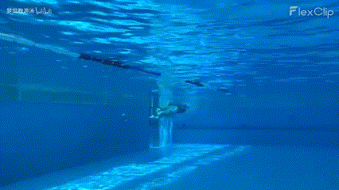

安全最重要，尤其是自己已经学会了游泳。
本文介绍了一套游泳教学视频，主要面向游泳初学者和水性练习，教学内容包括蛙泳的练习步骤和水性的练习。相信大家看完之后，肯定会有所收获。

1. 写在前面
建立安全感和水性才是学习蛙泳的重点
学习蛙泳首先要建立安全感和水性，再逐步练习自由泳等其他泳姿。同时，需要注意蛙泳难以提速且对关节有损伤，不适合锻炼身体，建议通过练习自由泳等泳姿来全面发展游泳技能。
- 一开始要学习蛙泳的原因
第一点，就是老年蛙上手很快。第二点，就是很快掌握安全感（水性/踩水）。如果下水就练习自由泳，有些水性比较差一点的同学，有可能需要练习好几个月才行。这半年里面一直没有安全感的，在水里面谁都受不了。
- 建议后续学习其他泳姿的原因
第一点，在四种泳姿中，因为手脚都不出水面、收腿手往前伸动作阻力大等原因，蛙泳的提速很难。而且蛙泳特别讲究天分，你要是那个蹬腿的水感不行，还真没办法。第二点，一个标准的蛙泳腿，它是对膝关节有损伤的，长距离游泳很容易受伤且达不到锻炼身体这个目的。大家可以通过练习蛙泳把水性练好，把踩水练好，然后马上去练习自由泳等，才是比较好的一个选择。
- 怎么克服怕水的方法
建议害怕水的同学，可以通过练习张开嘴巴呼吸来克服恐惧，同时鼻子不舒服或者耳朵不舒服时不要理会，专注于练习。对于担心小孩是否适合学游泳的家长，可以通过这些练习来检测孩子是否适合学游泳。比如，淋浴头下进行测试等。
2. 基本练习 - 换气
基础步骤：换气、漂浮、蛙泳腿、配合练习
如何在泳池中进行换气练习，包括嘴巴吸气、鼻子呼气、闭嘴鼻子呼气停一下再起来等步骤。注意，在水中的安全并反复练习尝试和改进自己的动作，灵活掌握连续换气。
换气模仿练习
- 四个步骤
- 嘴巴吸气下去，鼻子呼气上来
- 嘴巴吸气下去，鼻子呼气出水面，持续呼气再吸气
- 嘴巴吸气下去，闭上嘴巴呼气憋住上来，嘴巴呼气出水面，持续呼气再吸气
- 嘴巴吸气下去，鼻子呼气憋住上来，嘴巴呼气
- 注意事项
- 倾向于练习鼻子呼气
- 在模拟练习时可以用盆或桶接满水来练习
- 练习时不要急着吸气，要等到嘴巴鼻子出水面再持续呼气再吸气
- 四个步骤
潜水换气练习
- 四个步骤
- 嘴巴吸气下去 ，憋着气，然后上来再呼气
- 嘴巴吸气下去 ，憋着气，保持呼气并上来
- 嘴巴吸气下去，鼻子呼气，保持呼气并上来
- 嘴巴吸气，闭上嘴巴下去，鼻子呼气停一下，嘴巴保持呼气并上来
- 注意事项
- 手扶池边下去，眼睛看着前面
- 入水时鼻子喷气排开水，尤其是跳水和翻转时需要
- 出水面时用嘴巴呼气，鼻子呼吸是与生俱来的本能
- 四个步骤
连续换气练习
- 练习方式
- 标准：上来之后只吸一口气，马上要低头
- 下去鼻子呼气，停顿几秒，嘴巴一旦出了水面，上来尽快嘴巴换气
- 注意事项
- 连续做 10 到 15 次，可以把手的动作也配合上（手往下压）
- 注意吸气一定要快，不需要吸太多，下去时呼气，上来时吸气
- 保证自己的身体重心不要往前倾，不要往后倾，左右也不要，原地练习
- 练习方式
3. 基本练习 - 漂浮
基础步骤：换气、漂浮、蛙泳腿、配合练习
漂浮练习有助于让我们熟悉水性，其重点在于要求先低头再飘起来，还需要学会用腹肌收缩来抱膝练习漂浮站立。注意安全并反复练习，以逐渐掌握漂浮的技巧。
漂浮抱膝练习
- 漂浮要点
- 所有的漂浮都要求先把脑袋低下去再飘起来
- 池边上伸直脚练习自由泳腿，手扶池边吸气低头憋气让自己飘起来
- 手只是扶着池边，不要用力往下摁，把整个脑袋全部放到水里面去
- 不扶池边练习、拿板子练习、空手练习（不要往下压）
- 漂浮站立
- 练习腿的收回和伸直、把大腿收回来贴着肚子往下伸直等动作
- 手扶池边，把大腿收回来，贴着肚子，然后往下伸直，然后抬头
- 注意事项
- 漂浮时先吸气蹲下去再跳起来，以更容易飘起来
- 扶不起来的，可以裆部加一个板子就容器飘起来了
- 漂浮要点
抬头换气练习
- 简述步骤
- 换气时，先抬头，眼睛看着前面，嘴巴鼻子出来，换气
- 如果嘴巴鼻子出不来，再往下压，压到嘴巴鼻子能够出来换气就行
- 注意事项
- 在漂浮过程中用最小的动作幅度换气
- 尽量动脖子，实在出不了水面再往下压一点点
- 简述步骤
漂浮重心平衡
- 练习步骤
- 王八趴，即双手双脚分开趴在水面上，注意身体重心向两边分开
- 然后，扭屁股和身体重心前后移动，通过身体的动作来调整平衡
- 注意事项
- 蛙泳的重心前后移动原理
- 手脚的打开姿势、屁股拱起、重心迁移等技巧
- 练习步骤
蹬边漂浮练习
- 练习步骤
- 要先低头漂浮，然后蜷腿，之后蹬边
- 不要急着蹬池边，先稳定住，再蹬
- 前进方向
- 扭屁股调整前进方向、水平面往上往下练习
- 练习步骤
4. 基本练习 - 蛙泳腿
基础步骤：换气、漂浮、蛙泳腿、配合练习
蛙泳的腿部动作，包括收、翻、蹬、夹四个动作，并分为三步，需要注意每个动作的要领和注意事项。注意腿部的弧线和连贯性，包括在躺椅上收腿、翻脚蹬夹腿，以及在半陆地半水里的练习。
蛙泳腿部动作
- 练习步骤
- 四个步骤：收腿、翻腿、蹬腿、夹水
- 动作精髓
- 一二三停顿一下，是滑行长度变长，省劲而且高效
- 脚掌轨迹要呈现弧线而不是直线，不需要无限蹬开，够登出弧线即可
- 注意事项
- 主要收小腿，然后带动大腿
- 脚掌不要勾起来，膝盖之间的距离要短
- 要求大腿尽量悬空，小腿要往后翻开并用脚掌去蹬
- 练习步骤
漂浮蹬腿练习
- 练习步骤
- 将动作分成一收翻二蹬夹，手放慢一点
- 注意事项
- 注意脚掌平着屁股
- 检查脚掌是否翻开，脚趾头是否朝两边
- 注意身体状态的改变给动作带来的陌生感
- 练习步骤
蛙泳腿和换气的配合
- 练习步骤
- 低头蹬腿，蹬完第一次腿漂浮一会
- 蹬完第二次腿马上抬头换气，低头马上蹬腿
- 注意低头，不要收腿再蹬腿，要开始换气了
- 核心要点
- 一定要注意好换气和蹬腿的配合的时机
- 头抬到最高的时候，准备低头换气时，再蹬腿
- 错误原因
- 换气没练好，导致抬头换气时总是往下浮
- 弯腰驼背，需要注意抬头时不能同时收腿
- 动作太慢，需要依赖背漂，导致离不开它
- 抬头换气时总是觉得要越高越好，导致动作不连贯
- 注意事项
- 换气时腿还没沉到池底时要低头的原因
- 练习换气时不要往下压板子，而是快速抬头低头，同时蹬腿
- 练习步骤
控制前进方向
- 练习步骤
- 左右：身体的扭动来控制自己在水中的前进方向
- 上下：上半身往下压，把屁股拱起来，持续蹬腿
- 注意事项
- 练习漂浮和站立的重要性
- 练习步骤
提高蛙泳腿
- 练习步骤
- 门槛之一是灵活性
- 通过拉伸和锻炼来提高，例如瑜伽、健身等方式
- 门槛之二是力量
- 需要一定的爆发力和肌肉强度来支持，可以通过健身等培养
- 门槛之一是灵活性
- 注意事项
- 不要过于勉强，能够做到的范围内努力，即可
- 练习步骤
5. 基本练习 - 踩水
基础步骤：换气、漂浮、蛙泳腿、配合练习
需要连续换气、蹬腿、用腿跟着走等动作，以达到初级踩水的基本技能。练习时要保持眼睛看着前方，不要看到池底。练习向左向右向后转时要注意灵活转身，并且安全第一。
在水里面待的时间够长，它会自己浮起来的，浮力会有个趋势，让你沉不到底。所以，沉下去再浮起来的时候，这个时候去蹬腿和手往下压是比较有效的。下去后马上蹬腿，让脑袋要保持在水面上，对于初学者来说会导致频率加快。频率加快就容易断断，就容易呛水，呛水就容易有危。
初级踩水技巧
- 水性练习
- 在浅水区上下跳着换气、往前跳和往后跳，手也可以往后下方拨
- 在深水区，手扶着不松开，吸气身体直的下去，碰到时跳起来
- 在深水区，手不扶，往后下方拨水，来回跳做练习
- 在水中完成转身的动作之后，再踩水起来换气，向左向右向后转
- 初级踩水
- 吸一口气沉到水里面，脚是收翻状态蛙泳腿，方向朝下
- 然后，手同时往下压，脑袋起来，换一口气，再下去
- 实际应用
- 漂浮，漂浮站立，收大腿立起来沉下去，踩水起来
- 注意不要急着抬头换气，立起来沉下去再踩水起来换气
- 注意事项
- 最基本的自救技能，一定要学会的
- 一定要手扶着池边了再抬头，不要在最后 1 厘米上吃亏
- 眼睛要看前面而不是池底，练习时有伴盯着以确保安全
- 水性练习
进阶踩水
- 练习步骤
- 第一步：先保持眼睛在水面上，快频率地做动作，配合换气
- 第二步：尽量趋向于挺直身体，手脚同时向下，保持呼吸状态
- 第三步：随心所欲的踩水，不用保持节奏换气，根据需要呼吸
- 一次腿往下蹬，一次手往下压，配合上一次换气(同时/交替/按需)
- 注意事项
- 中级踩水要求保持脑袋在水面上，手脚动作熟练标准，手感好一点
- 要求自己的眼睛要保持在水面上就够了，上下的浮动尽量的趋向于平
- 练习步骤
抬头蛙的技能和应用
- 练习步骤
- 身体往前倒、不停顿、嘴巴保持好呼吸
- 身体往后倒、即反蛙泳，甚至可以躺平一点
- 注意事项
- 抬头蛙是一种有趣的技能，但不是游泳的主要部分
- 练习步骤
6. 基本练习 - 水性练习
基础步骤：换气、漂浮、蛙泳腿、配合练习
仰头换气、仰漂站立、转圈等的水性小练习，初学者特别是水性生疏的初学者在浅水区容易发生致命危险，应该学习如何避免。
仰头换气练习
- 练习步骤
- 捏着鼻子不进水，闭上嘴巴不进水
- 捏着鼻子下去，松开鼻子马上吐泡泡，边吐泡泡边起来
- 一定要马上吐泡泡，吐泡泡不能间断，一直吐泡泡出水面才行
- 联系方法
- 水和泳池齐平的情况下，躺倒倒挂练习
- 练习仰头换气时使用小池子，并且需要朋友帮助压腿
- 捏着鼻子抬头看天、吐泡泡（长一点/鼻孔不能进水）、身体向下
- 注意事项
- 对于提高水性换气的自由程度非常有帮助
- 鼻子呼气的时间长短和时机，以及如何避免呛水
- 练习步骤
仰漂站立练习
- 练习步骤
- 眼睛看天，板子放在中间，慢慢的往后倒，飘起来
- 吸一口气，松开板子向后转，然后漂浮站立站起来
- 注意事项
- 吸一口气向后转的时候，鼻子要一直呼气
- 练习步骤
简单滚翻和倒立
- 滚翻指导
- 吸气飘起来，大腿贴着肚子，脑袋贴着脖子，把自己卷成一个球
- 双手放到旁边，手伸直，然后就憋着，看看自己能憋多久
- 手往前、往后慢慢画圈；手往后甩，人就往前翻；反之亦然
- 直接摘掉鼻夹，翻的过程中，手动作快一点，鼻子一直呼气
- 倒立指导
- 翻到一半停下来，伸直，保持平衡
- 倒地的时候脸是对着池底的，所以不一定需要一直呼气
- 注意事项
- 需要注意鼻孔朝天的阶段并使用鼻夹保持呼吸来练习
- 滚翻中保持身体缩紧、不要伸直身体、带上鼻夹防止进水
- 洗一下自己鼻子，把上面的油渍去一下，就可以夹稳鼻夹
- 滚翻指导
7. 基本练习 - 配合练习
基础步骤：换气、漂浮、蛙泳腿、配合练习
蛙泳划手的动作要领和技巧，两个关键问题，一是抬头换气，二是不给整体动作造成负担。注意呼吸顺序，先抬头再滑手出水面。建议学生在每次下水前都练习一下，并且要把练习的过程想象成在水中的情景。
水中划手和换气的配合练习，首先，在浅水区进行练习时，应注意保持身体稳定，不要让自己飘起来。其次，深水区练习时，应注意保持重心，避免晃动。换气时要快速连续，不要太慢，并且手不要全部压到水下。
划手和换气配合
- 划手动作
- 手伸直，手掌往外 45 度分开(比肩宽一点)
- 然后小手臂回来一点，带动大手臂回来，再伸直
- 练习步骤
- 陆地练习：一脚前一脚后弯腰，低头手伸直(准备动作)；动作一，抬头嘴巴吸气并身体挺直划手；动作二，鼻子呼气伸手低头。
- 水中练习：
- 进阶步骤：可以先用板子或漂浮棒练习动作，熟悉之后再去掉
- 注意事项
- 早呼吸：一开始划手就抬头开始换气；熟悉后可以不用这种方式
- 初学者者的蛙泳划手，主要为了抬头换气，其次不要做太多动作
- 划手动作
全身动作配合练习
- 练习步骤
- 强调了蹬腿、划手和换气的配合
- 伸手低头蹬腿，备注伸手跟低头可以同时
- 注意事项
- 伸手低头蹬完腿之后，停顿漂浮
- 划手能够抬头换气就行了，不要划太大
- 避免使用划手增加动力，应为水里手往前伸，阻力很大
- 练习步骤
8. 基本练习 - 常见问题
基础步骤：换气、漂浮、蛙泳腿、配合练习
指出了初学者游蛙泳时可能遇到的问题，并解答了这些问题，给出了相应的练习方法。
蛙泳游着游着怕会沉的问题
- 问题原因
- 主要是蛙泳换气的问题，导致下沉
- 练习步骤
- 首先，在浅水区，手扶池边，连续换气
- 然后，手扶的池边飘起来，抬头换气(手不要往下压)
- 然后，拿着板子，练习蹬腿加换气的配合，以及抬头换气
- 注意事项
- 连续换气或者是抬头换气都是基本功
- 问题原因
身体形态的问题及解决方法
- 问题原因
- 游泳时身体形态的问题
- 如何保持身体平行于水面以减小阻力
- 因肩关节硬、腹部没力、骨盆前倾等原因而导致身体下沉
- 练习步骤
- 以身体能够漂浮起来为优先
- 自己的屁股拱起来一下，重心往前
- 半陆地的蛙泳腿模仿练习，板子换气和蹬腿的配合练习低头蹬腿
- 注意事项
- 身体平着跟水面平行的这么一个姿态阻力最小
- 问题原因
蛙泳滑手的问题及解决方法
- 问题原因
- 手滑、蹬腿和划手的配合、换气等问题
- 练习步骤
- 能抬头换气的情况下手的动作滑的越小越好
- 避免大手掌不要超过了肩膀，到后面去划手
- 注意事项
- 一定要注意好低头再蹬腿
- 初学者的划手就是为了换口气
- 脑袋放到水里面去了手还没伸直
- 问题原因
9. 参考链接
送人玫瑰，手有余香！